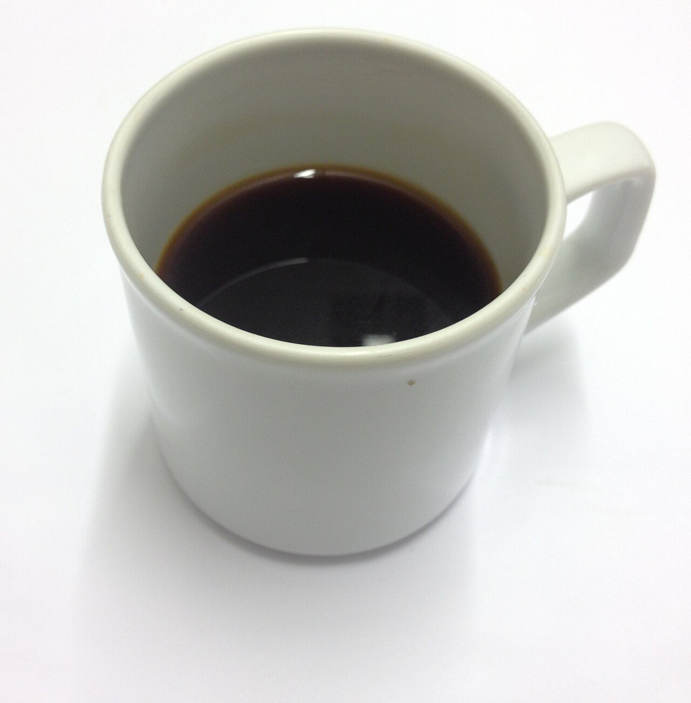
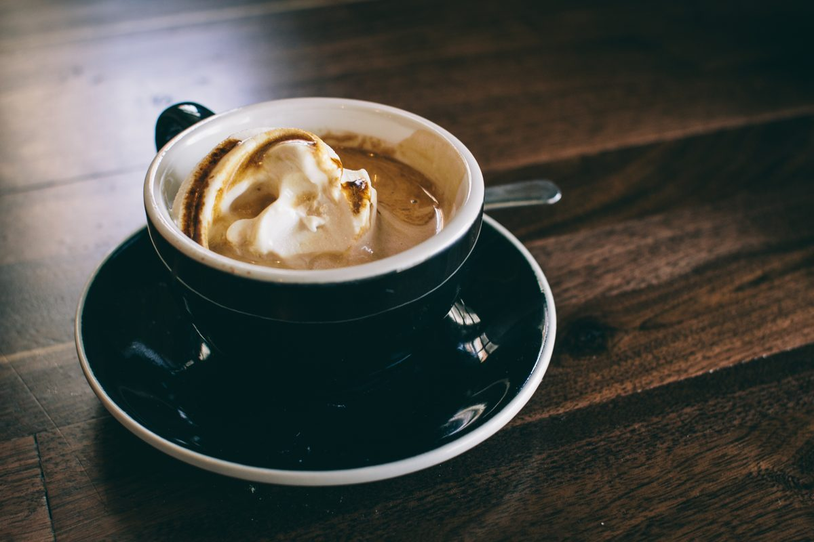
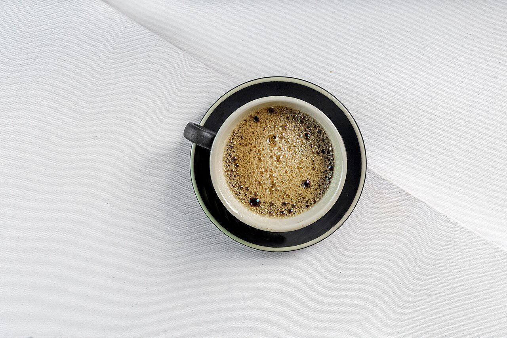
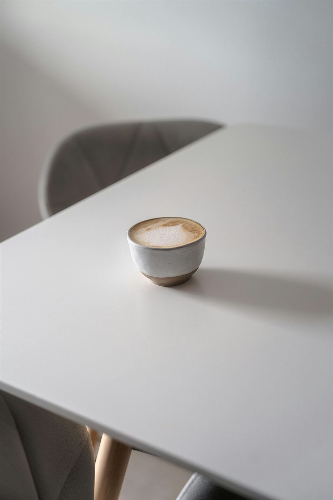
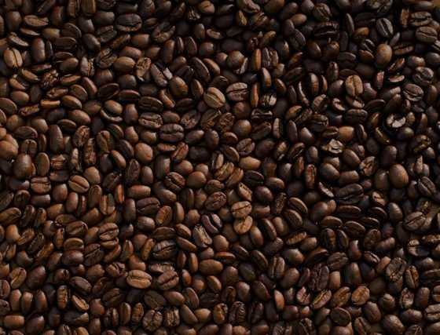
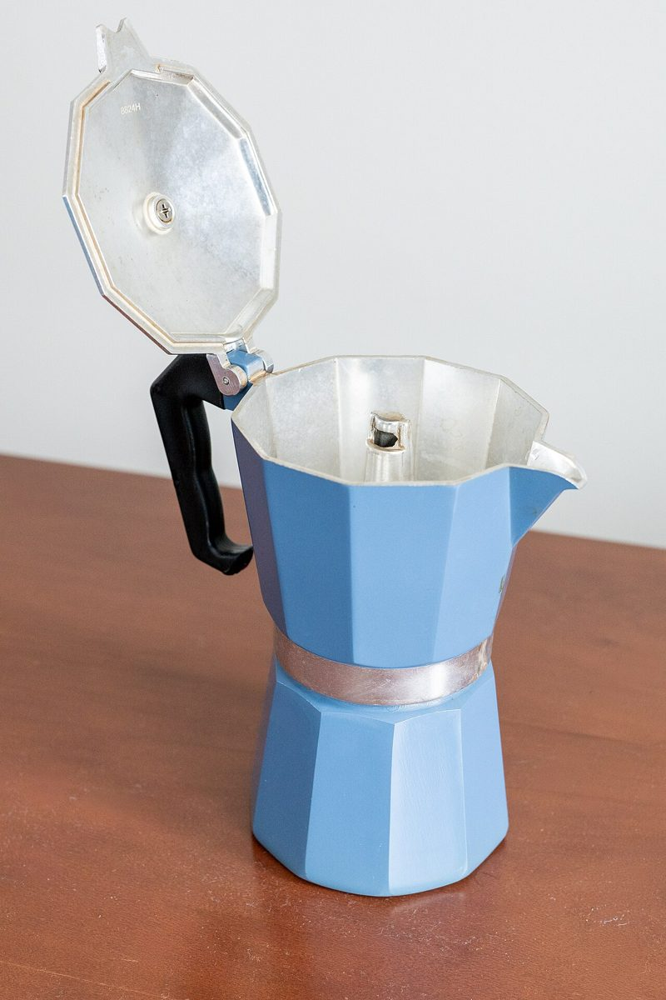
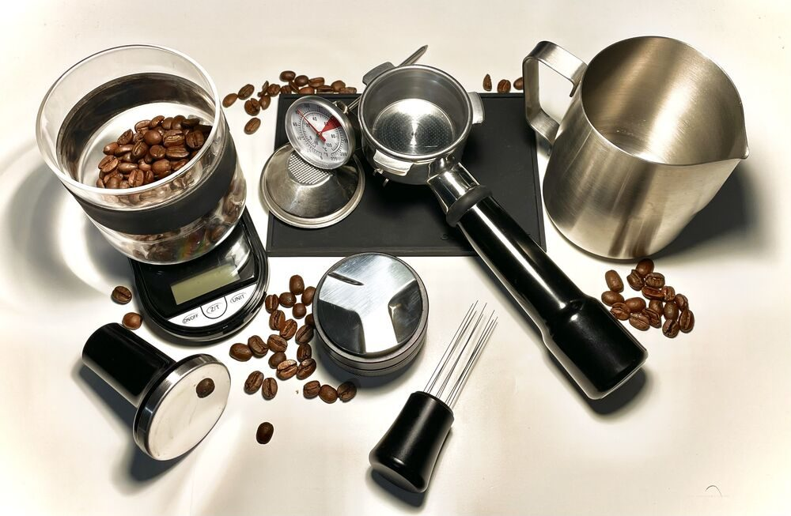

COFFEE TAKEOUT / 愛媛県新居浜市
KIITOSCOFFEE STAND
「Kiitos」はフィンランド語で「ありがとう」。ひと言の感謝を添えて、一杯をそのまま持ち歩ける。そんなコーヒースタンドです。
Instagramを見るABOUT
お店のこと
KIITOS COFFEE STAND は、新居浜市高木町にあるテイクアウト専門のコーヒースタンドです。Instagramのプロフィールには「takeoutのみ」「店内はヘアサロンです」と書かれており、店内に席を設けず、お持ち帰りで楽しむスタイルのお店です。
店名の「Kiitos」は、フィンランド語で「ありがとう」を意味する言葉です。(言葉の意味は一般的な事実です。お店がこの名前を選んだ理由は確認できていないため、ここでは断定しません。)
店の由来・オーナー様の想いなどは確認できる公開情報が見当たりませんでした。ご提供いただければ、このページに反映します。
MENU
メニュー
Instagramのハイライトに「メニュー」の紹介があるとのことですが、品目や価格は確認できていません。詳細は準備中です。
下の写真はフリー素材のイメージで、実際の商品ではありません。






IMAGE
コーヒーのある風景(イメージ)
フリー素材のイメージで、店舗の実際の様子ではありません。




VOICE
口コミ(イメージ例)
以下は完成後の見え方を示す創作のサンプルで、実在のお客様の声ではありません。
仕事の合間に立ち寄って、温かいカップを受け取るとほっとします。持ち帰りなので時間がないときも助かります。
ご来店のお客様
「ありがとう」という店名のとおり、気持ちのよい受け答えでした。散歩のお供にまた買いに行きたいです。
ご来店のお客様
コーヒーの香りがふわっと広がって、帰り道まで楽しめました。ちょっとしたごほうびにちょうどいい一杯です。
ご来店のお客様
ACCESS
アクセス・店舗情報
| 所在地 | 〒792-0031 愛媛県新居浜市高木町7-13 |
|---|---|
| 電話 | 準備中(お問い合わせはInstagramのDMから) |
| 営業時間 | 準備中 Instagramのプロフィールには10:00〜18:00の記載がありますが、最新の情報はInstagramでご確認ください。 |
| 定休日 | 準備中 |
| 駐車場 | Instagramに「なるべく第二駐車場をご利用ください」との案内があります。詳細は準備中 |
| SNS | Instagram @kiitos_coffeestand |